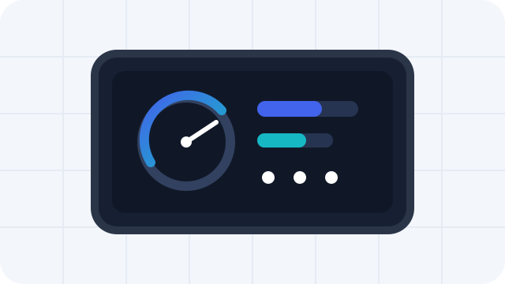
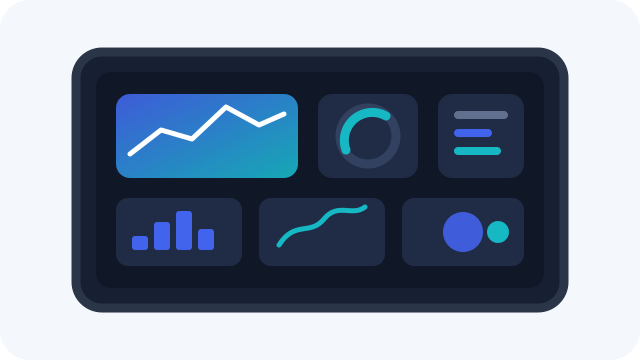
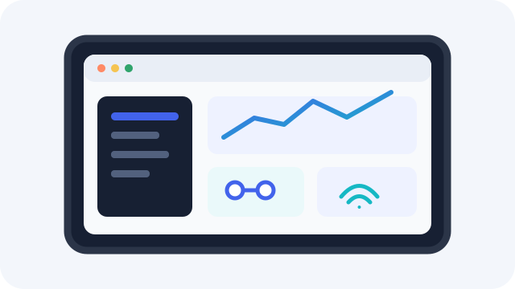
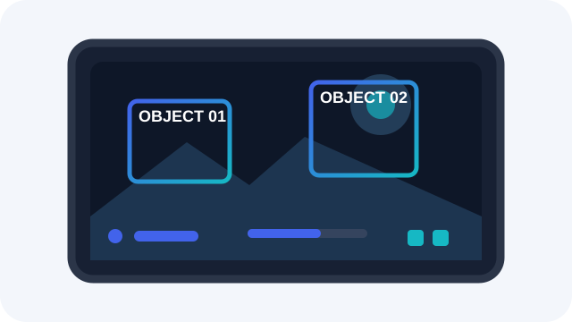

01
Compute
MCU · MPU · SoC
Processing platforms matched to UI complexity, operating system, interfaces and application requirements.
Request Compute →Start with the HMI architecture, then match the compute platform, display and touch, memory, and connectivity needed for evaluation and production.
The architecture determines the practical range for compute, software, display interfaces, memory and peripheral integration.

Fast boot · LVGL · control I/O.
Evaluate this path
Richer graphics · more memory · more I/O.
Evaluate this path
Qt/QML · networking · larger displays.
Evaluate this path
Camera · video · AI · high bandwidth.
Evaluate this pathOpen HMI can combine the core HMI platform with display, memory and connectivity resources. Exact parts and vendor options depend on the project, availability and supplier access policy.
Processing platforms matched to UI complexity, operating system, interfaces and application requirements.
Request Compute →Standard and custom TFT options, capacitive or resistive touch, plus in-cell integration where appropriate.
Request Display & Touch →Memory and storage options matched to the platform, software footprint, boot requirements and production needs.
Request Memory →Wireless ICs and communication modules for connected HMI products, selected around system and regional requirements.
Request Connectivity →Share the application, display, software, interfaces and project stage. We’ll use that context to narrow the evaluation path instead of pushing a fixed component list.